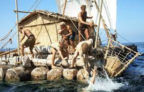

Сюжет
Фильм повествует о легендарном путешествии Тура Хейердала, которому удалось добраться из Южной Америки в Полинезию на плоте. Он с небольшой командой преодолел 3770 морских миль (6980 км) пути в водах Тихого океана, перевернув представление о границах возможностей человека. Хотя общепринятые этнографические теории того времени утверждали, что Полинезия была заселена народами, мигрировавшими с запада, Хейердал, этнограф и искатель приключений, намеревался доказать собственную теорию о том, что поселенцы из Южной Америки заселили острова ещё в доколумбовые времена.

Отмечая сходство между статуями, найденными в Южной Америке, и полинезийскими моаи, теория Хейердала о происхождении полинезийского народа подкрепляется местным фольклором, рассказывающим о древнем племени под названием ханау эпе, которое, как говорят, когда-то населяло остров Пасхи. Большинство экспертов считали, что подобное путешествие через бескрайний океан вряд ли могло быть успешным. С целью проиллюстрировать его возможность, Хейердал вместе с единомышленниками строит плот из древесины Бальсы, используя приблизительно те же методы, которые применялись 1500 лет назад коренными народами региона. Хотя сам он не умеет плавать, а также совершенно не владеет навыками навигации на парусных судах, он отправляется в опасное путешествие длиной 4300 морских миль через Тихий океан из Перу в Полинезию на борту небольшого плота вместе с командой из пяти человек и попугаем ара по имени Лорита.
В течение трёх месяцев на борту примитивного судна, названного в честь бога солнца и шторма инков Кон-Тики, экспедиция, имитирующая предполагаемое путешествие древних племён от побережья Перу к полинезийским островам, испытывала всевозможные невзгоды, вроде беспощадных морских штормов, нападений акул и прочих опасностей открытого океана. Так или иначе путешественники в конце концов достигают Полинезии. Сам Хейердал, прожив некоторое время на одном из островов, возвращается домой, и, после развода с женой, решает открыть музей «Кон-Тики» в столице Норвегии Осло.